基础篇Redis
基础篇Redis
开篇导读
理想课程
小伙伴们理想的课程一定是能够通过讲解的方式，得到如下这些启发，我们的课程会从基础到精通，从redis小白，到redis大牛，还在等什么，这套课程一定就是你最适合你的课程~
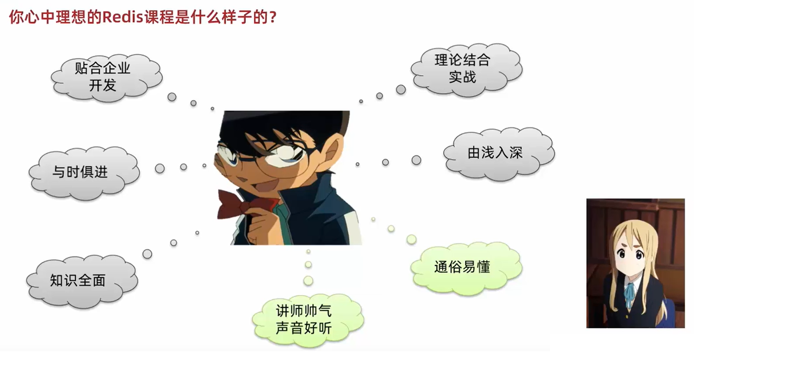
1.Redis简单介绍
Redis是一种键值型的NoSql数据库，这里有两个关键字：
- 键值型
- NoSql
其中键值型，是指Redis中存储的数据都是以key.value对的形式存储，而value的形式多种多样，可以是字符串.数值.甚至json：
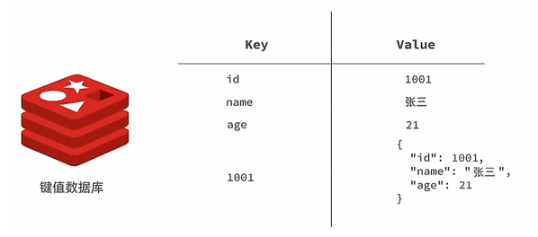
而NoSql则是相对于传统关系型数据库而言，有很大差异的一种数据库。
对于存储的数据，没有类似🔗 Mysql那么严格的约束，比如唯一性，是否可以为null等等，所以我们把这种松散结构的数据库，称之为NoSQL数据库。
2.课程目录
- 初始Redis
- 认识NoSQL
- 认识Redis
- 安装Redis
- Redis常见命令
- 5种常见数据结构
- 通用命令
- 不同数据结构的操作命令
- Redis的Java客户端
- Jedis客户端
- SpringDataRedis客户端
3.初始Redis
3.1.认识NoSQL
NoSql可以翻译做Not Only Sql（不仅仅是SQL），或者是No Sql（非Sql的）数据库。是相对于传统关系型数据库而言，有很大差异的一种特殊的数据库，因此也称之为非关系型数据库。
3.1.1.结构化与非结构化
传统关系型数据库是结构化数据，每一张表都有严格的约束信息：字段名.字段数据类型.字段约束等等信息，插入的数据必须遵守这些约束：

而NoSql则对数据库格式没有严格约束，往往形式松散，自由。
可以是键值型：

也可以是文档型：

甚至可以是图格式：

3.1.2.关联和非关联
传统数据库的表与表之间往往存在关联，例如外键：

而非关系型数据库不存在关联关系，要维护关系要么靠代码中的业务逻辑，要么靠数据之间的耦合：
{
id: 1,
name: "张三",
orders: [
{
id: 1,
item: {
id: 10, title: "荣耀6", price: 4999
}
},
{
id: 2,
item: {
id: 20, title: "小米11", price: 3999
}
}
]
}
此处要维护“张三”的订单与商品“荣耀”和“小米11”的关系，不得不冗余的将这两个商品保存在张三的订单文档中，不够优雅。还是建议用业务来维护关联关系。
3.1.3.查询方式
传统关系型数据库会基于Sql语句做查询，语法有统一标准；
而不同的非关系数据库查询语法差异极大，五花八门各种各样。

3.1.4.事务
传统关系型数据库能满足事务ACID的原则。

而非关系型数据库往往不支持事务，或者不能严格保证ACID的特性，只能实现基本的一致性。
3.1.5.总结
除了上述四点以外，在存储方式.扩展性.查询性能上关系型与非关系型也都有着显著差异，总结如下：

- 存储方式
- 关系型数据库基于磁盘进行存储，会有大量的磁盘IO，对性能有一定影响
-
非关系型数据库，他们的操作更多的是依赖于内存来操作，内存的读写速度会非常快，性能自然会好一些
-
扩展性
- 关系型数据库集群模式一般是主从，主从数据一致，起到数据备份的作用，称为垂直扩展。
- 非关系型数据库可以将数据拆分，存储在不同机器上，可以保存海量数据，解决内存大小有限的问题。称为水平扩展。
- 关系型数据库因为表之间存在关联关系，如果做水平扩展会给数据查询带来很多麻烦
3.2.认识Redis
Redis诞生于2009年全称是Remote Dictionary Server 远程词典服务器，是一个基于内存的键值型NoSQL数据库。
特征：
- 键值（key-value）型，value支持多种不同数据结构，功能丰富
- 单线程，每个命令具备原子性
- 低延迟，速度快（基于内存.IO多路复用.良好的编码）。
- 支持数据持久化
- 支持主从集群.分片集群
- 支持多语言客户端
作者：Antirez
Redis的官方网站地址：https://redis.io/
3.3.安装Redis
大多数企业都是基于Linux服务器来部署项目，而且Redis官方也没有提供Windows版本的安装包。因此课程中我们会基于Linux系统来安装Redis.
此处选择的Linux版本为CentOS 7.
3.3.1.依赖库
Redis是基于C语言编写的，因此首先需要安装Redis所需要的gcc依赖：
yum install -y gcc tcl
3.3.2.上传安装包并解压
然后将课前资料提供的Redis安装包上传到虚拟机的任意目录：

例如，我放到了/usr/local/src 目录：

解压缩：
tar -xzf redis-6.2.6.tar.gz
解压后：

进入redis目录：
cd redis-6.2.6
运行编译命令：
make && make install
如果没有出错，应该就安装成功了。
默认的安装路径是在 /usr/local/bin目录下：

该目录已经默认配置到环境变量，因此可以在任意目录下运行这些命令。其中：
- redis-cli：是redis提供的命令行客户端
- redis-server：是redis的服务端启动脚本
- redis-sentinel：是redis的哨兵启动脚本
3.3.3.启动
redis的启动方式有很多种，例如：
- 默认启动
- 指定配置启动
- 开机自启
3.3.4.默认启动
安装完成后，在任意目录输入redis-server命令即可启动Redis：
redis-server
如图：

这种启动属于前台启动，会阻塞整个会话窗口，窗口关闭或者按下CTRL + C则Redis停止。不推荐使用。
3.3.5.指定配置启动
如果要让Redis以后台方式启动，则必须修改Redis配置文件，就在我们之前解压的redis安装包下（/usr/local/src/redis-6.2.6），名字叫redis.conf：
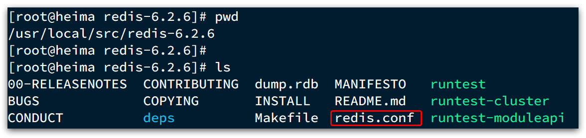
我们先将这个配置文件备份一份：
cp redis.conf redis.conf.bck
然后修改redis.conf文件中的一些配置：
# 允许访问的地址，默认是127.0.0.1，会导致只能在本地访问。修改为0.0.0.0则可以在任意IP访问，生产环境不要设置为0.0.0.0
bind 0.0.0.0
# 守护进程，修改为yes后即可后台运行
daemonize yes
# 密码，设置后访问Redis必须输入密码
requirepass 123321
Redis的其它常见配置：
# 监听的端口
port 6379
# 工作目录，默认是当前目录，也就是运行redis-server时的命令，日志.持久化等文件会保存在这个目录
dir .
# 数据库数量，设置为1，代表只使用1个库，默认有16个库，编号0~15
databases 1
# 设置redis能够使用的最大内存
maxmemory 512mb
# 日志文件，默认为空，不记录日志，可以指定日志文件名
logfile "redis.log"
启动Redis：
# 进入redis安装目录
cd /usr/local/src/redis-6.2.6
# 启动
redis-server redis.conf
停止服务：
# 利用redis-cli来执行 shutdown 命令，即可停止 Redis 服务，
# 因为之前配置了密码，因此需要通过 -u 来指定密码
redis-cli -u 123321 shutdown
3.3.6.开机自启
我们也可以通过配置来实现开机自启。
首先，新建一个系统服务文件：
vi /etc/systemd/system/redis.service
内容如下：
[Unit]
Description=redis-server
After=network.target
[Service]
Type=forking
ExecStart=/usr/local/bin/redis-server /usr/local/src/redis-6.2.6/redis.conf
PrivateTmp=true
[Install]
WantedBy=multi-user.target
然后重载系统服务：
systemctl daemon-reload
现在，我们可以用下面这组命令来操作redis了：
# 启动
systemctl start redis
# 停止
systemctl stop redis
# 重启
systemctl restart redis
# 查看状态
systemctl status redis
执行下面的命令，可以让redis开机自启：
systemctl enable redis
3.4.Redis桌面客户端
安装完成Redis，我们就可以操作Redis，实现数据的CRUD了。这需要用到Redis客户端，包括：
- 命令行客户端
- 图形化桌面客户端
- 编程客户端
3.4.1.Redis命令行客户端
Redis安装完成后就自带了命令行客户端：redis-cli，使用方式如下：
redis-cli [options] [commonds]
其中常见的options有：
-h 127.0.0.1：指定要连接的redis节点的IP地址，默认是127.0.0.1-p 6379：指定要连接的redis节点的端口，默认是6379-a 123321：指定redis的访问密码
其中的commonds就是Redis的操作命令，例如：
ping：与redis服务端做心跳测试，服务端正常会返回pong
不指定commond时，会进入redis-cli的交互控制台：

3.4.2.图形化桌面客户端
GitHub上的大神编写了Redis的图形化桌面客户端，地址：https://github.com/uglide/RedisDesktopManager
不过该仓库提供的是RedisDesktopManager的源码，并未提供windows安装包。
在下面这个仓库可以找到安装包：https://github.com/lework/RedisDesktopManager-Windows/releases
3.4.3.安装
在课前资料中可以找到Redis的图形化桌面客户端：

解压缩后，运行安装程序即可安装：

安装完成后，在安装目录下找到rdm.exe文件：

双击即可运行：

3.4.4.建立连接
点击左上角的连接到Redis服务器按钮：

在弹出的窗口中填写Redis服务信息：

点击确定后，在左侧菜单会出现这个链接：

点击即可建立连接了。

Redis默认有16个仓库，编号从0至15. 通过配置文件可以设置仓库数量，但是不超过16，并且不能自定义仓库名称。
如果是基于redis-cli连接Redis服务，可以通过select命令来选择数据库：
# 选择 0号库
select 0
4.Redis常见命令
4.1 Redis数据结构介绍
Redis是一个key-value的数据库，key一般是String类型，不过value的类型多种多样：
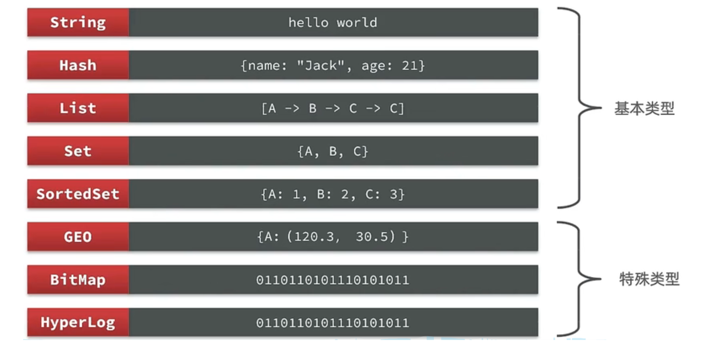
贴心小建议：命令不要死记，学会查询就好啦
Redis为了方便我们学习，将操作不同数据类型的命令也做了分组，在官网（ https://redis.io/commands ）可以查看到不同的命令：
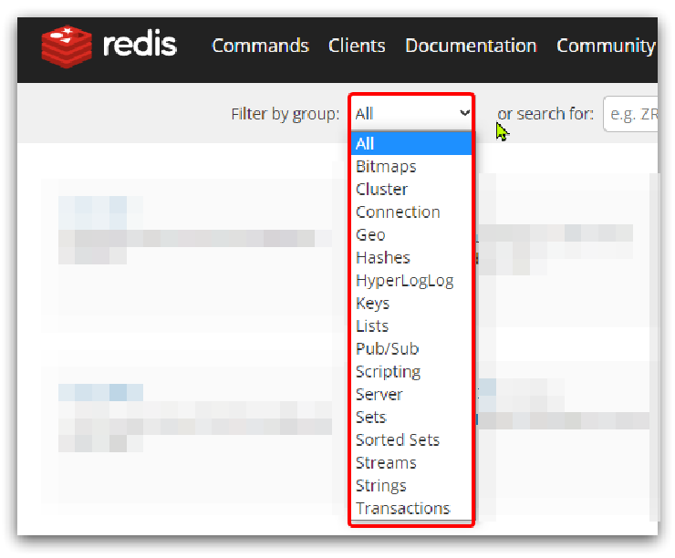
当然我们也可以通过Help命令来帮助我们去查看命令
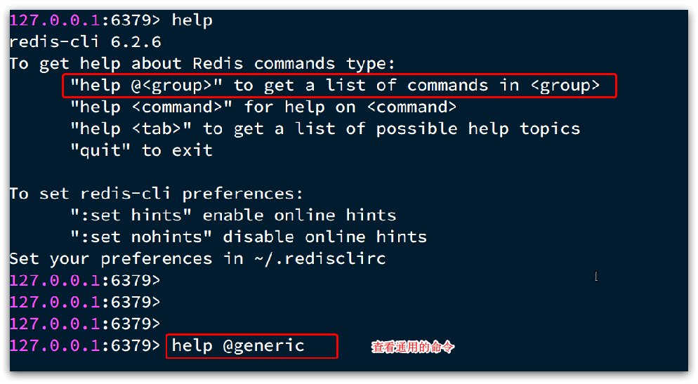
4.2 Redis 通用命令
通用指令是部分数据类型的，都可以使用的指令，常见的有：
- KEYS：查看符合模板的所有key
- DEL：删除一个指定的key
- EXISTS：判断key是否存在
- EXPIRE：给一个key设置有效期，有效期到期时该key会被自动删除
- TTL：查看一个KEY的剩余有效期
通过help [command] 可以查看一个命令的具体用法，例如：
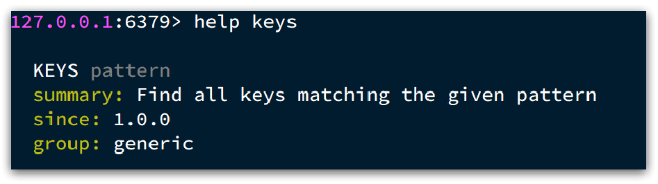
课堂代码如下
- KEYS
127.0.0.1:6379> keys *
1) "name"
2) "age"
127.0.0.1:6379>
# 查询以a开头的key
127.0.0.1:6379> keys a*
1) "age"
127.0.0.1:6379>
贴心小提示：在生产环境下，不推荐使用keys 命令，因为这个命令在key过多的情况下，效率不高
- DEL
127.0.0.1:6379> help del
DEL key [key ...]
summary: Delete a key
since: 1.0.0
group: generic
127.0.0.1:6379> del name #删除单个
(integer) 1 #成功删除1个
127.0.0.1:6379> keys *
1) "age"
127.0.0.1:6379> MSET k1 v1 k2 v2 k3 v3 #批量添加数据
OK
127.0.0.1:6379> keys *
1) "k3"
2) "k2"
3) "k1"
4) "age"
127.0.0.1:6379> del k1 k2 k3 k4
(integer) 3 #此处返回的是成功删除的key，由于redis中只有k1,k2,k3 所以只成功删除3个，最终返回
127.0.0.1:6379>
127.0.0.1:6379> keys * #再查询全部的key
1) "age" #只剩下一个了
127.0.0.1:6379>
贴心小提示：同学们在拷贝代码的时候，只需要拷贝对应的命令哦~
- EXISTS
127.0.0.1:6379> help EXISTS
EXISTS key [key ...]
summary: Determine if a key exists
since: 1.0.0
group: generic
127.0.0.1:6379> exists age
(integer) 1
127.0.0.1:6379> exists name
(integer) 0
- EXPIRE
贴心小提示：内存非常宝贵，对于一些数据，我们应当给他一些过期时间，当过期时间到了之后，他就会自动被删除~
127.0.0.1:6379> expire age 10
(integer) 1
127.0.0.1:6379> ttl age
(integer) 8
127.0.0.1:6379> ttl age
(integer) 6
127.0.0.1:6379> ttl age
(integer) -2
127.0.0.1:6379> ttl age
(integer) -2 #当这个key过期了，那么此时查询出来就是-2
127.0.0.1:6379> keys *
(empty list or set)
127.0.0.1:6379> set age 10 #如果没有设置过期时间
OK
127.0.0.1:6379> ttl age
(integer) -1 # ttl的返回值就是-1
4.3 Redis命令-String命令
String类型，也就是字符串类型，是Redis中最简单的存储类型。
其value是字符串，不过根据字符串的格式不同，又可以分为3类：
- string：普通字符串
- int：整数类型，可以做自增.自减操作
- float：浮点类型，可以做自增.自减操作
String的常见命令有：
- SET：添加或者修改已经存在的一个String类型的键值对
- GET：根据key获取String类型的value
- MSET：批量添加多个String类型的键值对
- MGET：根据多个key获取多个String类型的value
- INCR：让一个整型的key自增1
- INCRBY:让一个整型的key自增并指定步长，例如：incrby num 2 让num值自增2
- INCRBYFLOAT：让一个浮点类型的数字自增并指定步长
- SETNX：添加一个String类型的键值对，前提是这个key不存在，否则不执行
- SETEX：添加一个String类型的键值对，并且指定有效期
贴心小提示：以上命令除了INCRBYFLOAT 都是常用命令
- SET 和GET: 如果key不存在则是新增，如果存在则是修改
127.0.0.1:6379> set name Rose //原来不存在
OK
127.0.0.1:6379> get name
"Rose"
127.0.0.1:6379> set name Jack //原来存在，就是修改
OK
127.0.0.1:6379> get name
"Jack"
- MSET和MGET
127.0.0.1:6379> MSET k1 v1 k2 v2 k3 v3
OK
127.0.0.1:6379> MGET name age k1 k2 k3
1) "Jack" //之前存在的name
2) "10" //之前存在的age
3) "v1"
4) "v2"
5) "v3"
- INCR和INCRBY和DECY
127.0.0.1:6379> get age
"10"
127.0.0.1:6379> incr age //增加1
(integer) 11
127.0.0.1:6379> get age //获得age
"11"
127.0.0.1:6379> incrby age 2 //一次增加2
(integer) 13 //返回目前的age的值
127.0.0.1:6379> incrby age 2
(integer) 15
127.0.0.1:6379> incrby age -1 //也可以增加负数，相当于减
(integer) 14
127.0.0.1:6379> incrby age -2 //一次减少2个
(integer) 12
127.0.0.1:6379> DECR age //相当于 incr 负数，减少正常用法
(integer) 11
127.0.0.1:6379> get age
"11"
- SETNX
127.0.0.1:6379> help setnx
SETNX key value
summary: Set the value of a key, only if the key does not exist
since: 1.0.0
group: string
127.0.0.1:6379> set name Jack //设置名称
OK
127.0.0.1:6379> setnx name lisi //如果key不存在，则添加成功
(integer) 0
127.0.0.1:6379> get name //由于name已经存在，所以lisi的操作失败
"Jack"
127.0.0.1:6379> setnx name2 lisi //name2 不存在，所以操作成功
(integer) 1
127.0.0.1:6379> get name2
"lisi"
- SETEX
127.0.0.1:6379> setex name 10 jack
OK
127.0.0.1:6379> ttl name
(integer) 8
127.0.0.1:6379> ttl name
(integer) 7
127.0.0.1:6379> ttl name
(integer) 5
4.4 Redis命令-Key的层级结构
Redis没有类似MySQL中的Table的概念，我们该如何区分不同类型的key呢？
例如，需要存储用户.商品信息到redis，有一个用户id是1，有一个商品id恰好也是1，此时如果使用id作为key，那就会冲突了，该怎么办？
我们可以通过给key添加前缀加以区分，不过这个前缀不是随便加的，有一定的规范：
Redis的key允许有多个单词形成层级结构，多个单词之间用':'隔开，格式如下：
这个格式并非固定，也可以根据自己的需求来删除或添加词条。
例如我们的项目名称叫 heima，有user和product两种不同类型的数据，我们可以这样定义key：
-
user相关的key：heima:user:1
-
product相关的key：heima:product:1
如果Value是一个Java对象，例如一个User对象，则可以将对象序列化为JSON字符串后存储：
| KEY | VALUE |
|---|---|
| heima:user:1 | {"id":1, "name": "Jack", "age": 21} |
| heima:product:1 | {"id":1, "name": "小米11", "price": 4999} |
一旦我们向redis采用这样的方式存储，那么在可视化界面中，redis会以层级结构来进行存储，形成类似于这样的结构，更加方便Redis获取数据
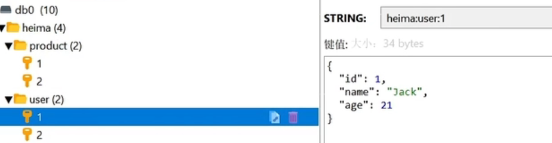
4.5 Redis命令-Hash命令
Hash类型，也叫散列，其value是一个无序字典，类似于Java中的HashMap结构。
String结构是将对象序列化为JSON字符串后存储，当需要修改对象某个字段时很不方便：
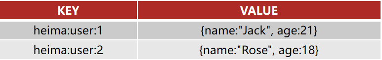
Hash结构可以将对象中的每个字段独立存储，可以针对单个字段做CRUD：
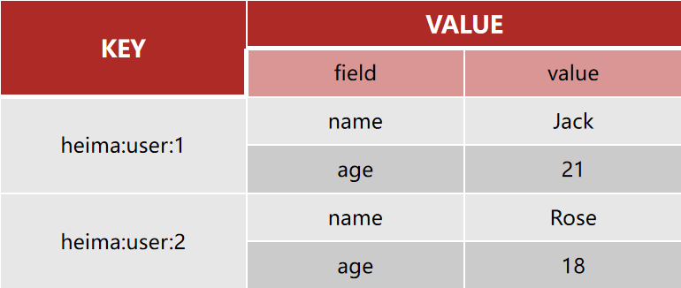
Hash类型的常见命令
-
HSET key field value：添加或者修改hash类型key的field的值
-
HGET key field：获取一个hash类型key的field的值
-
HMSET：批量添加多个hash类型key的field的值
-
HMGET：批量获取多个hash类型key的field的值
-
HGETALL：获取一个hash类型的key中的所有的field和value
- HKEYS：获取一个hash类型的key中的所有的field
- HINCRBY:让一个hash类型key的字段值自增并指定步长
- HSETNX：添加一个hash类型的key的field值，前提是这个field不存在，否则不执行
贴心小提示：哈希结构也是我们以后实际开发中常用的命令哟
- HSET和HGET
127.0.0.1:6379> HSET heima:user:3 name Lucy//大key是 heima:user:3 小key是name，小value是Lucy
(integer) 1
127.0.0.1:6379> HSET heima:user:3 age 21// 如果操作不存在的数据，则是新增
(integer) 1
127.0.0.1:6379> HSET heima:user:3 age 17 //如果操作存在的数据，则是修改
(integer) 0
127.0.0.1:6379> HGET heima:user:3 name
"Lucy"
127.0.0.1:6379> HGET heima:user:3 age
"17"
- HMSET和HMGET
127.0.0.1:6379> HMSET heima:user:4 name HanMeiMei
OK
127.0.0.1:6379> HMSET heima:user:4 name LiLei age 20 sex man
OK
127.0.0.1:6379> HMGET heima:user:4 name age sex
1) "LiLei"
2) "20"
3) "man"
- HGETALL
127.0.0.1:6379> HGETALL heima:user:4
1) "name"
2) "LiLei"
3) "age"
4) "20"
5) "sex"
6) "man"
- HKEYS和HVALS
127.0.0.1:6379> HKEYS heima:user:4
1) "name"
2) "age"
3) "sex"
127.0.0.1:6379> HVALS heima:user:4
1) "LiLei"
2) "20"
3) "man"
- HINCRBY
127.0.0.1:6379> HINCRBY heima:user:4 age 2
(integer) 22
127.0.0.1:6379> HVALS heima:user:4
1) "LiLei"
2) "22"
3) "man"
127.0.0.1:6379> HINCRBY heima:user:4 age -2
(integer) 20
- HSETNX
127.0.0.1:6379> HSETNX heima:user4 sex woman
(integer) 1
127.0.0.1:6379> HGETALL heima:user:3
1) "name"
2) "Lucy"
3) "age"
4) "17"
127.0.0.1:6379> HSETNX heima:user:3 sex woman
(integer) 1
127.0.0.1:6379> HGETALL heima:user:3
1) "name"
2) "Lucy"
3) "age"
4) "17"
5) "sex"
6) "woman"
4.6 Redis命令-List命令
Redis中的List类型与Java中的LinkedList类似，可以看做是一个双向链表结构。既可以支持正向检索和也可以支持反向检索。
特征也与LinkedList类似：
- 有序
- 元素可以重复
- 插入和删除快
- 查询速度一般
常用来存储一个有序数据，例如：朋友圈点赞列表，评论列表等。
List的常见命令有：
- LPUSH key element ... ：向列表左侧插入一个或多个元素
- LPOP key：移除并返回列表左侧的第一个元素，没有则返回nil
- RPUSH key element ... ：向列表右侧插入一个或多个元素
- RPOP key：移除并返回列表右侧的第一个元素
- LRANGE key star end：返回一段角标范围内的所有元素
- BLPOP和BRPOP：与LPOP和RPOP类似，只不过在没有元素时等待指定时间，而不是直接返回nil

- LPUSH和RPUSH
127.0.0.1:6379> LPUSH users 1 2 3
(integer) 3
127.0.0.1:6379> RPUSH users 4 5 6
(integer) 6
- LPOP和RPOP
127.0.0.1:6379> LPOP users
"3"
127.0.0.1:6379> RPOP users
"6"
- LRANGE
127.0.0.1:6379> LRANGE users 1 2
1) "1"
2) "4"
4.7 Redis命令-Set命令
Redis的Set结构与Java中的HashSet类似，可以看做是一个value为null的HashMap。因为也是一个hash表，因此具备与HashSet类似的特征：
- 无序
- 元素不可重复
- 查找快
- 支持交集.并集.差集等功能
Set类型的常见命令
- SADD key member ... ：向set中添加一个或多个元素
- SREM key member ... : 移除set中的指定元素
- SCARD key： 返回set中元素的个数
- SISMEMBER key member：判断一个元素是否存在于set中
- SMEMBERS：获取set中的所有元素
- SINTER key1 key2 ... ：求key1与key2的交集
- SDIFF key1 key2 ... ：求key1与key2的差集
- SUNION key1 key2 ..：求key1和key2的并集
例如两个集合：s1和s2:

求交集：SINTER s1 s2
求s1与s2的不同：SDIFF s1 s2

具体命令
127.0.0.1:6379> sadd s1 a b c
(integer) 3
127.0.0.1:6379> smembers s1
1) "c"
2) "b"
3) "a"
127.0.0.1:6379> srem s1 a
(integer) 1
127.0.0.1:6379> SISMEMBER s1 a
(integer) 0
127.0.0.1:6379> SISMEMBER s1 b
(integer) 1
127.0.0.1:6379> SCARD s1
(integer) 2
案例
- 将下列数据用Redis的Set集合来存储：
- 张三的好友有：李四.王五.赵六
- 李四的好友有：王五.麻子.二狗
- 利用Set的命令实现下列功能：
- 计算张三的好友有几人
- 计算张三和李四有哪些共同好友
- 查询哪些人是张三的好友却不是李四的好友
- 查询张三和李四的好友总共有哪些人
- 判断李四是否是张三的好友
- 判断张三是否是李四的好友
- 将李四从张三的好友列表中移除
127.0.0.1:6379> SADD zs lisi wangwu zhaoliu
(integer) 3
127.0.0.1:6379> SADD ls wangwu mazi ergou
(integer) 3
127.0.0.1:6379> SCARD zs
(integer) 3
127.0.0.1:6379> SINTER zs ls
1) "wangwu"
127.0.0.1:6379> SDIFF zs ls
1) "zhaoliu"
2) "lisi"
127.0.0.1:6379> SUNION zs ls
1) "wangwu"
2) "zhaoliu"
3) "lisi"
4) "mazi"
5) "ergou"
127.0.0.1:6379> SISMEMBER zs lisi
(integer) 1
127.0.0.1:6379> SISMEMBER ls zhangsan
(integer) 0
127.0.0.1:6379> SREM zs lisi
(integer) 1
127.0.0.1:6379> SMEMBERS zs
1) "zhaoliu"
2) "wangwu"
4.8 Redis命令-SortedSet类型
Redis的SortedSet是一个可排序的set集合，与Java中的TreeSet有些类似，但底层数据结构却差别很大。SortedSet中的每一个元素都带有一个score属性，可以基于score属性对元素排序，底层的实现是一个跳表（SkipList）加 hash表。
SortedSet具备下列特性：
- 可排序
- 元素不重复
- 查询速度快
因为SortedSet的可排序特性，经常被用来实现排行榜这样的功能。
SortedSet的常见命令有：
- ZADD key score member：添加一个或多个元素到sorted set ，如果已经存在则更新其score值
- ZREM key member：删除sorted set中的一个指定元素
- ZSCORE key member : 获取sorted set中的指定元素的score值
- ZRANK key member：获取sorted set 中的指定元素的排名
- ZCARD key：获取sorted set中的元素个数
- ZCOUNT key min max：统计score值在给定范围内的所有元素的个数
- ZINCRBY key increment member：让sorted set中的指定元素自增，步长为指定的increment值
- ZRANGE key min max：按照score排序后，获取指定排名范围内的元素
- ZRANGEBYSCORE key min max：按照score排序后，获取指定score范围内的元素
- ZDIFF.ZINTER.ZUNION：求差集.交集.并集
注意：所有的排名默认都是升序，如果要降序则在命令的Z后面添加REV即可，例如：
- 升序获取sorted set 中的指定元素的排名：ZRANK key member
- 降序获取sorted set 中的指定元素的排名：ZREVRANK key memeber
5.Redis的Java客户端-Jedis
在Redis官网中提供了各种语言的客户端，地址：https://redis.io/docs/clients/

其中Java客户端也包含很多：
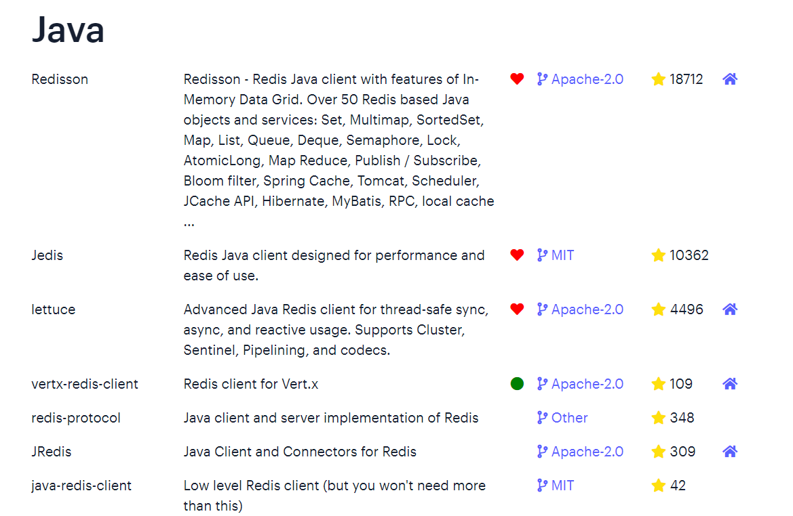
标记为❤的就是推荐使用的java客户端，包括：
- Jedis和Lettuce：这两个主要是提供了Redis命令对应的API，方便我们操作Redis，而SpringDataRedis又对这两种做了抽象和封装，因此我们后期会直接以SpringDataRedis来学习。
- Redisson：是在Redis基础上实现了分布式的可伸缩的java数据结构，例如Map.Queue等，而且支持跨进程的同步机制：Lock.Semaphore等待，比较适合用来实现特殊的功能需求。
5.1 Jedis快速入门
入门案例详细步骤
案例分析：
0）创建工程：

1）引入依赖：
<!--jedis-->
<dependency>
<groupId>redis.clients</groupId>
<artifactId>jedis</artifactId>
<version>3.7.0</version>
</dependency>
<!--单元测试-->
<dependency>
<groupId>org.junit.jupiter</groupId>
<artifactId>junit-jupiter</artifactId>
<version>5.7.0</version>
<scope>test</scope>
</dependency>
2）建立连接
新建一个单元测试类，内容如下：
private Jedis jedis;
@BeforeEach
void setUp() {
// 1.建立连接
// jedis = new Jedis("192.168.150.101", 6379);
jedis = JedisConnectionFactory.getJedis();
// 2.设置密码
jedis.auth("123321");
// 3.选择库
jedis.select(0);
}
3）测试：
@Test
void testString() {
// 存入数据
String result = jedis.set("name", "虎哥");
System.out.println("result = " + result);
// 获取数据
String name = jedis.get("name");
System.out.println("name = " + name);
}
@Test
void testHash() {
// 插入hash数据
jedis.hset("user:1", "name", "Jack");
jedis.hset("user:1", "age", "21");
// 获取
Map<String, String> map = jedis.hgetAll("user:1");
System.out.println(map);
}
4）释放资源
@AfterEach
void tearDown() {
if (jedis != null) {
jedis.close();
}
}
5.2 Jedis连接池
Jedis本身是线程不安全的，并且频繁的创建和销毁连接会有性能损耗，因此我们推荐大家使用Jedis连接池代替Jedis的直连方式
有关池化思想，并不仅仅是这里会使用，很多地方都有，比如说我们的数据库连接池，比如我们tomcat中的线程池，这些都是池化思想的体现。
5.2.1.创建Jedis的连接池
public class JedisConnectionFacotry {
private static final JedisPool jedisPool;
static {
//配置连接池
JedisPoolConfig poolConfig = new JedisPoolConfig();
poolConfig.setMaxTotal(8);
poolConfig.setMaxIdle(8);
poolConfig.setMinIdle(0);
poolConfig.setMaxWaitMillis(1000);
//创建连接池对象
jedisPool = new JedisPool(poolConfig,
"192.168.150.101",6379,1000,"123321");
}
public static Jedis getJedis(){
return jedisPool.getResource();
}
}
代码说明：
-
1） JedisConnectionFacotry：工厂设计模式是实际开发中非常常用的一种设计模式，我们可以使用工厂，去降低代的耦合，比如Spring中的Bean的创建，就用到了工厂设计模式
-
2）静态代码块：随着类的加载而加载，确保只能执行一次，我们在加载当前工厂类的时候，就可以执行static的操作完成对 连接池的初始化
-
3）最后提供返回连接池中连接的方法.
5.2.2.改造原始代码
代码说明:
1.在我们完成了使用工厂设计模式来完成代码的编写之后，我们在获得连接时，就可以通过工厂来获得。
，而不用直接去new对象，降低耦合，并且使用的还是连接池对象。
2.当我们使用了连接池后，当我们关闭连接其实并不是关闭，而是将Jedis还回连接池的。
@BeforeEach
void setUp(){
//建立连接
/*jedis = new Jedis("127.0.0.1",6379);*/
jedis = JedisConnectionFacotry.getJedis();
//选择库
jedis.select(0);
}
@AfterEach
void tearDown() {
if (jedis != null) {
jedis.close();
}
}
6.Redis的Java客户端-SpringDataRedis
SpringData是Spring中数据操作的模块，包含对各种数据库的集成，其中对Redis的集成模块就叫做SpringDataRedis，官网地址：https://spring.io/projects/spring-data-redis
- 提供了对不同Redis客户端的整合（Lettuce和Jedis）
- 提供了RedisTemplate统一API来操作Redis
- 支持Redis的发布订阅模型
- 支持Redis哨兵和Redis集群
- 支持基于Lettuce的响应式编程
- 支持基于JDK.JSON.字符串.Spring对象的数据序列化及反序列化
- 支持基于Redis的JDKCollection实现
SpringDataRedis中提供了RedisTemplate工具类，其中封装了各种对Redis的操作。并且将不同数据类型的操作API封装到了不同的类型中：

6.1.快速入门
SpringBoot已经提供了对SpringDataRedis的支持，使用非常简单：
6.1.1.导入pom坐标
<?xml version="1.0" encoding="UTF-8"?>
<project xmlns="http://maven.apache.org/POM/4.0.0" xmlns:xsi="http://www.w3.org/2001/XMLSchema-instance"
xsi:schemaLocation="http://maven.apache.org/POM/4.0.0 https://maven.apache.org/xsd/maven-4.0.0.xsd">
<modelVersion>4.0.0</modelVersion>
<parent>
<groupId>org.springframework.boot</groupId>
<artifactId>spring-boot-starter-parent</artifactId>
<version>2.5.7</version>
<relativePath/> <!-- lookup parent from repository -->
</parent>
<groupId>com.heima</groupId>
<artifactId>redis-demo</artifactId>
<version>0.0.1-SNAPSHOT</version>
<name>redis-demo</name>
<description>Demo project for Spring Boot</description>
<properties>
<java.version>1.8</java.version>
</properties>
<dependencies>
<!--redis依赖-->
<dependency>
<groupId>org.springframework.boot</groupId>
<artifactId>spring-boot-starter-data-redis</artifactId>
</dependency>
<!--common-pool-->
<dependency>
<groupId>org.apache.commons</groupId>
<artifactId>commons-pool2</artifactId>
</dependency>
<!--Jackson依赖-->
<dependency>
<groupId>com.fasterxml.jackson.core</groupId>
<artifactId>jackson-databind</artifactId>
</dependency>
<dependency>
<groupId>org.projectlombok</groupId>
<artifactId>lombok</artifactId>
<optional>true</optional>
</dependency>
<dependency>
<groupId>org.springframework.boot</groupId>
<artifactId>spring-boot-starter-test</artifactId>
<scope>test</scope>
</dependency>
</dependencies>
<build>
<plugins>
<plugin>
<groupId>org.springframework.boot</groupId>
<artifactId>spring-boot-maven-plugin</artifactId>
<configuration>
<excludes>
<exclude>
<groupId>org.projectlombok</groupId>
<artifactId>lombok</artifactId>
</exclude>
</excludes>
</configuration>
</plugin>
</plugins>
</build>
</project>
6.1.2 .配置文件
spring:
redis:
host: 192.168.150.101
port: 6379
password: 123321
lettuce:
pool:
max-active: 8 #最大连接
max-idle: 8 #最大空闲连接
min-idle: 0 #最小空闲连接
max-wait: 100ms #连接等待时间
6.1.3.测试代码
@SpringBootTest
class RedisDemoApplicationTests {
@Autowired
private RedisTemplate<String, Object> redisTemplate;
@Test
void testString() {
// 写入一条String数据
redisTemplate.opsForValue().set("name", "虎哥");
// 获取string数据
Object name = redisTemplate.opsForValue().get("name");
System.out.println("name = " + name);
}
}
贴心小提示：SpringDataJpa使用起来非常简单，记住如下几个步骤即可
SpringDataRedis的使用步骤：
- 引入spring-boot-starter-data-redis依赖
- 在application.yml配置Redis信息
- 注入RedisTemplate
6.2 .数据序列化器
RedisTemplate可以接收任意Object作为值写入Redis：

只不过写入前会把Object序列化为字节形式，默认是采用JDK序列化，得到的结果是这样的：

缺点：
- 可读性差
- 内存占用较大
我们可以自定义RedisTemplate的序列化方式，代码如下：
@Configuration
public class RedisConfig {
@Bean
public RedisTemplate<String, Object> redisTemplate(RedisConnectionFactory connectionFactory){
// 创建RedisTemplate对象
RedisTemplate<String, Object> template = new RedisTemplate<>();
// 设置连接工厂
template.setConnectionFactory(connectionFactory);
// 创建JSON序列化工具
GenericJackson2JsonRedisSerializer jsonRedisSerializer =
new GenericJackson2JsonRedisSerializer();
// 设置Key的序列化
template.setKeySerializer(RedisSerializer.string());
template.setHashKeySerializer(RedisSerializer.string());
// 设置Value的序列化
template.setValueSerializer(jsonRedisSerializer);
template.setHashValueSerializer(jsonRedisSerializer);
// 返回
return template;
}
}
这里采用了JSON序列化来代替默认的JDK序列化方式。最终结果如图：

整体可读性有了很大提升，并且能将Java对象自动的序列化为JSON字符串，并且查询时能自动把JSON反序列化为Java对象。不过，其中记录了序列化时对应的class名称，目的是为了查询时实现自动反序列化。这会带来额外的内存开销。
6.3 StringRedisTemplate
尽管JSON的序列化方式可以满足我们的需求，但依然存在一些问题，如图：

为了在反序列化时知道对象的类型，JSON序列化器会将类的class类型写入json结果中，存入Redis，会带来额外的内存开销。
为了减少内存的消耗，我们可以采用手动序列化的方式，换句话说，就是不借助默认的序列化器，而是我们自己来控制序列化的动作，同时，我们只采用String的序列化器，这样，在存储value时，我们就不需要在内存中就不用多存储数据，从而节约我们的内存空间

这种用法比较普遍，因此SpringDataRedis就提供了RedisTemplate的子类：StringRedisTemplate，它的key和value的序列化方式默认就是String方式。

省去了我们自定义RedisTemplate的序列化方式的步骤，而是直接使用：
@SpringBootTest
class RedisStringTests {
@Autowired
private StringRedisTemplate stringRedisTemplate;
@Test
void testString() {
// 写入一条String数据
stringRedisTemplate.opsForValue().set("verify:phone:13600527634", "124143");
// 获取string数据
Object name = stringRedisTemplate.opsForValue().get("name");
System.out.println("name = " + name);
}
private static final ObjectMapper mapper = new ObjectMapper();
@Test
void testSaveUser() throws JsonProcessingException {
// 创建对象
User user = new User("虎哥", 21);
// 手动序列化
String json = mapper.writeValueAsString(user);
// 写入数据
stringRedisTemplate.opsForValue().set("user:200", json);
// 获取数据
String jsonUser = stringRedisTemplate.opsForValue().get("user:200");
// 手动反序列化
User user1 = mapper.readValue(jsonUser, User.class);
System.out.println("user1 = " + user1);
}
}
此时我们再来看一看存储的数据，小伙伴们就会发现那个class数据已经不在了，节约了我们的空间~

最后小总结：
RedisTemplate的两种序列化实践方案：
- 方案一：
- 自定义RedisTemplate
-
修改RedisTemplate的序列化器为GenericJackson2JsonRedisSerializer
-
方案二：
- 使用StringRedisTemplate
- 写入Redis时，手动把对象序列化为JSON
- 读取Redis时，手动把读取到的JSON反序列化为对象
6.4 Hash结构操作
在基础篇的最后，咱们对Hash结构操作一下，收一个小尾巴，这个代码咱们就不再解释啦
马上就开始新的篇章~~~进入到我们的Redis实战篇
@SpringBootTest
class RedisStringTests {
@Autowired
private StringRedisTemplate stringRedisTemplate;
@Test
void testHash() {
stringRedisTemplate.opsForHash().put("user:400", "name", "虎哥");
stringRedisTemplate.opsForHash().put("user:400", "age", "21");
Map<Object, Object> entries = stringRedisTemplate.opsForHash().entries("user:400");
System.out.println("entries = " + entries);
}
}